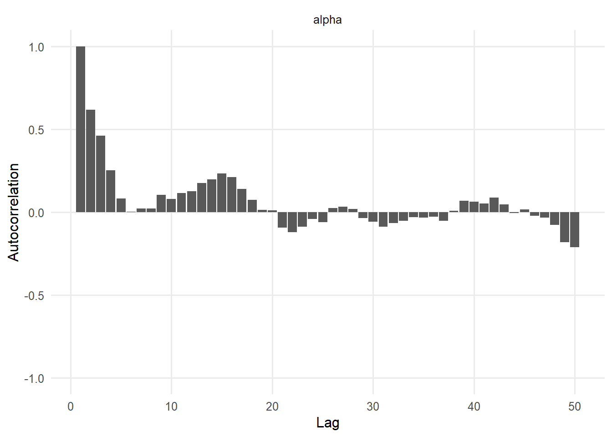
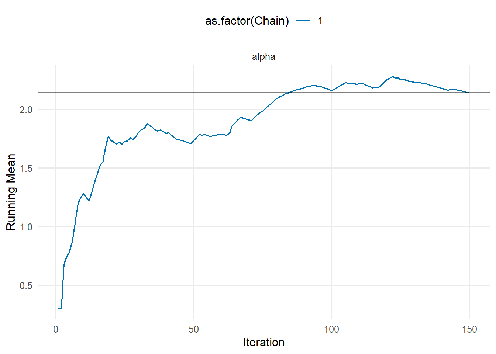
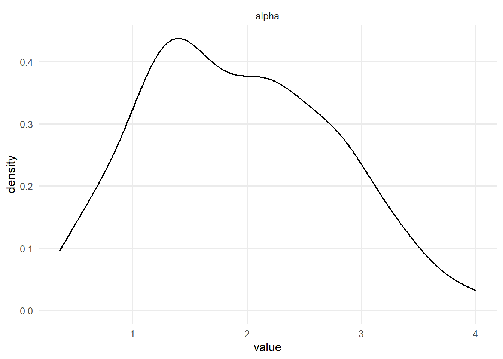
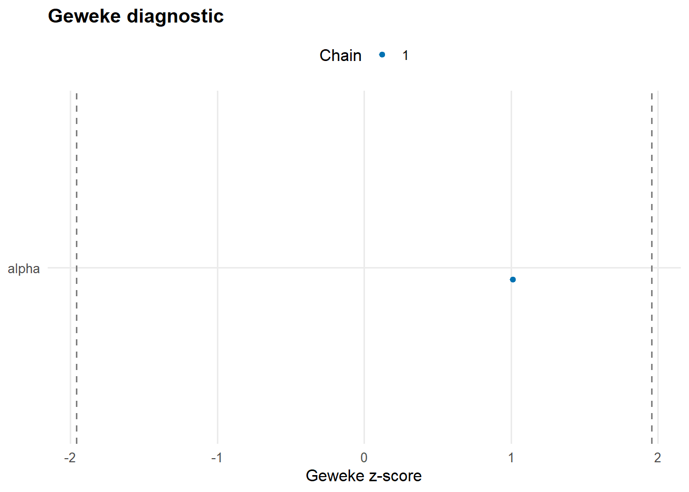
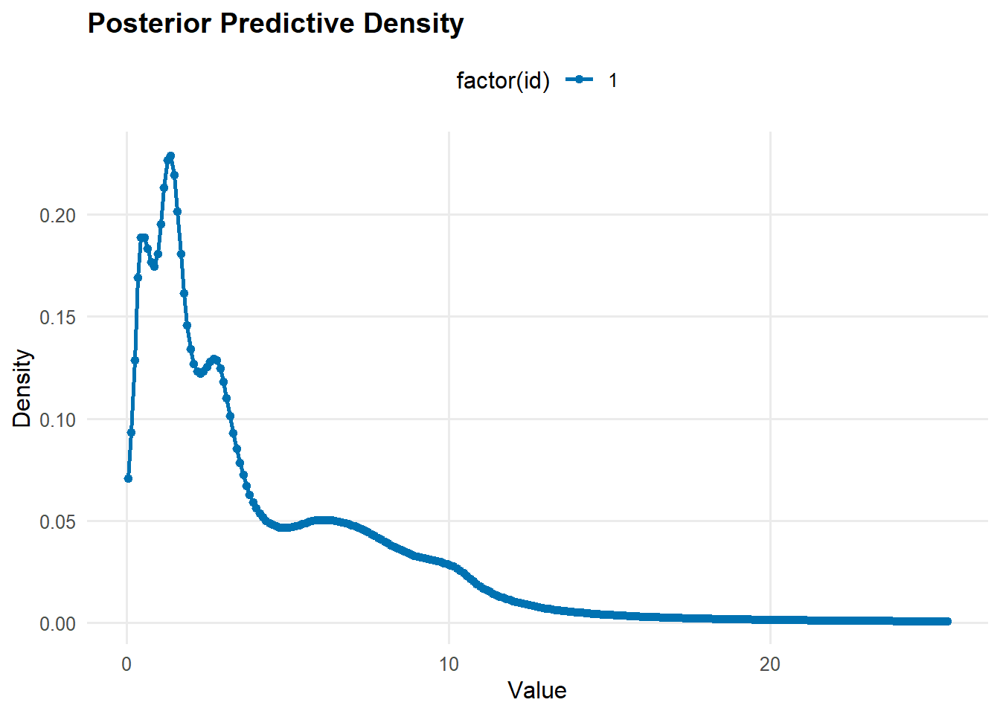
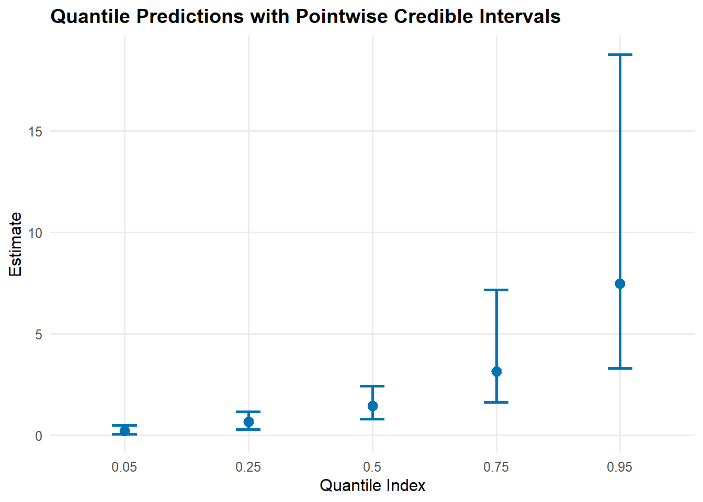
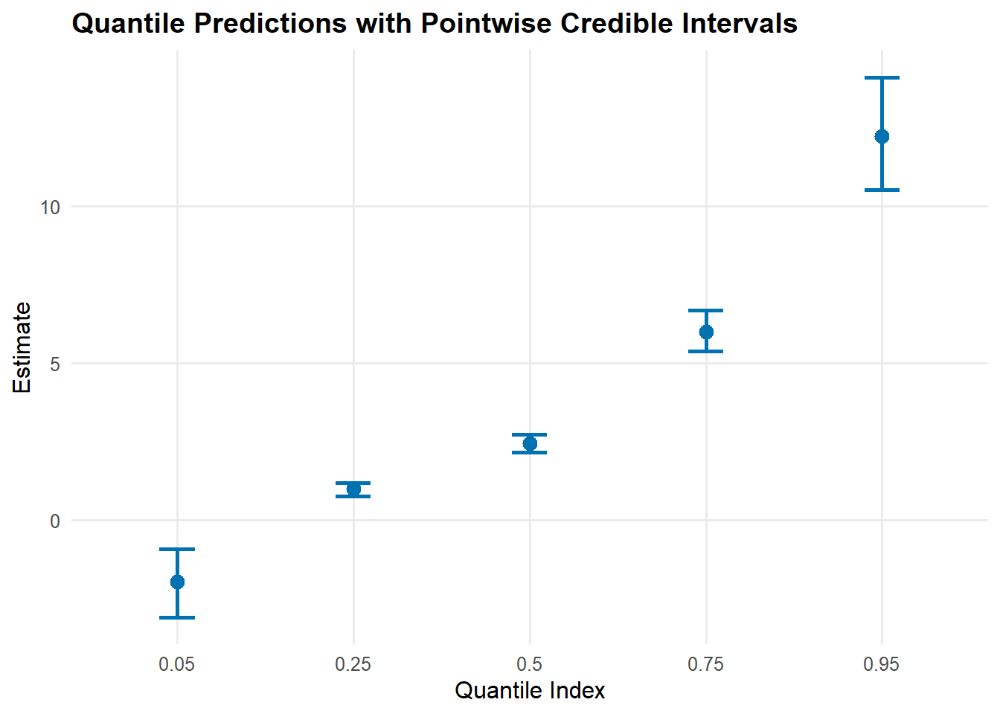
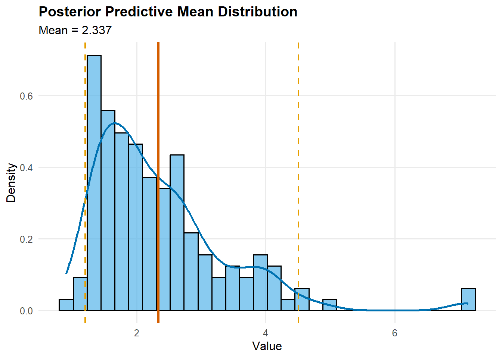
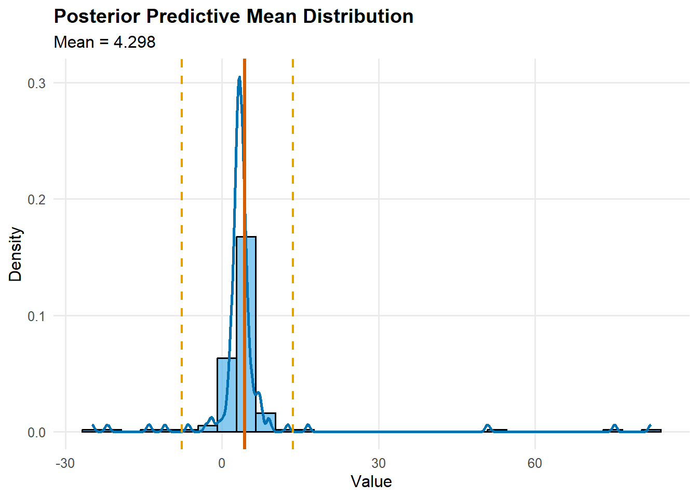
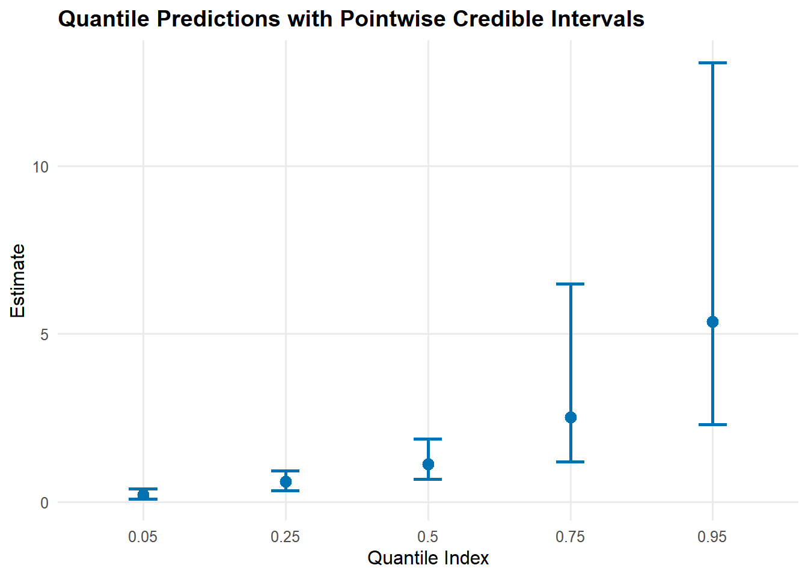

ex07. Unconditional DPmix with Stick-Breaking Backend
Legacy vignette (for the website / historical notes). These files may not match the current exported API one-to-one. Last verified: 2026-01-18.
For the up-to-date workflow, see the main package vignettes (basic, unconditional, conditional, and causal)..
Unconditional DPmix: Stick-Breaking (SB) Backend
Purpose: Showcase the stick-breaking backend that uses a fixed number of mixture components (components = J) and contrast it with the CRP backend from QuickStart/backends-and-workflow. In this vignette we fit two bulk kernels (Gamma and Cauchy) on the same dataset to highlight how heavier tails in the bulk can change the fit even without a GPD tail.
We build the stick-breaking mixture explicitly with components = 5 so that there is room for weight decay while keeping the MCMC runtime manageable for a vignette. We then refit the same SB model with a Cauchy kernel for comparison.
# Default diagnostics for each fitsafe_plot(fit_sb_gamma, family =c("traceplot", "autocorrelation", "running"))
Scale for colour is already present.
Adding another scale for colour, which will replace the existing scale.
Scale for colour is already present.
Adding another scale for colour, which will replace the existing scale.


safe_plot(fit_sb_cauchy, family =c("density", "geweke", "caterpillar"))
Scale for colour is already present.
Adding another scale for colour, which will replace the existing scale.
Warning: Using `size` aesthetic for lines was deprecated in ggplot2 3.4.0.
ℹ Please use `linewidth` instead.
ℹ The deprecated feature was likely used in the ggmcmc package.
Please report the issue at <https://github.com/xfim/ggmcmc/issues/>.


Use summary(fit_sb_gamma) and summary(fit_sb_cauchy) to inspect effective sample size, R-hat, and other convergence diagnostics; the plot() calls above show the trace/density pairs for both global and stick-breaking weight parameters.
Stick-Breaking Weights & Component Activity
The stick-breaking weights are exposed via the plot() diagnostics above, and you can refer to the raw fit_sb_gamma / fit_sb_cauchy objects (or their summary() output) for posterior summaries of each component weight.
Posterior Predictions
y_grid <-seq(min(y_mixed), max(y_mixed) *1.3, length.out =250)pred_density_gamma <-predict(fit_sb_gamma, y = y_grid, type ="density")pred_density_cauchy <-predict(fit_sb_cauchy, y = y_grid, type ="density")safe_plot(pred_density_gamma)
safe_plot(pred_density_cauchy)

quant_probs <-c(0.05, 0.25, 0.5, 0.75, 0.95)pred_q_gamma <-predict(fit_sb_gamma, type ="quantile", index = quant_probs, interval ="credible")pred_q_cauchy <-predict(fit_sb_cauchy, type ="quantile", index = quant_probs, interval ="credible")safe_plot(pred_q_gamma)

safe_plot(pred_q_cauchy)

pred_mean_gamma <-predict(fit_sb_gamma, type ="mean")pred_mean_cauchy <-predict(fit_sb_cauchy, type ="mean")safe_plot(pred_mean_gamma)

safe_plot(pred_mean_cauchy)

Bulk-only vs CRP Backends
bundle_crp_small <- DPmixGPD::build_nimble_bundle(y = y_mixed,kernel ="gamma",backend ="crp",components =5,GPD =FALSE,mcmc = mcmc)fit_crp_small <-load_or_fit("ex07-unconditional-DPmix-SB-fit_crp_small", run_mcmc_bundle_manual(bundle_crp_small))crp_quant <-predict(fit_crp_small, type ="quantile", index = quant_probs, interval ="credible")sb_quant <-predict(fit_sb_gamma, type ="quantile", index = quant_probs, interval ="credible")bind_rows( crp_quant$fit %>%mutate(model ="CRP"), sb_quant$fit %>%mutate(model ="SB")) %>%select(any_of(c("model", "index", "estimate", "lower", "upper"))) %>%mutate(across(where(is.numeric), ~round(.x, 3))) %>%kable(caption ="Quantile Comparison: CRP vs SB", align ="c") %>%kable_styling(bootstrap_options =c("striped", "hover"), full_width =FALSE, position ="center")
Quantile Comparison: CRP vs SB
model
index
estimate
lower
upper
CRP
0.05
0.214
0.089
0.393
CRP
0.25
0.600
0.332
0.926
CRP
0.50
1.121
0.672
1.871
CRP
0.75
2.522
1.197
6.487
CRP
0.95
5.354
2.300
13.074
SB
0.05
0.219
0.064
0.509
SB
0.25
0.692
0.299
1.178
SB
0.50
1.450
0.803
2.422
SB
0.75
3.146
1.623
7.170
SB
0.95
7.485
3.315
18.755
safe_plot(crp_quant)

safe_plot(sb_quant)
For unconditional models, use predict() only; fitted() and residuals() are not supported.
Takeaways
SB Backend: Fixed components keeps label-switching manageable, and the diagnostic plots via the S3 plot() method show weight dynamics.
Kernels matter: Gamma vs Cauchy can behave very differently in the shoulders/tails, even without a GPD tail.
Predictions: Posterior density, posterior-mean quantiles, and mean (via predictive sampling) are accessible via predict() with pointwise 95% credible intervals.
Backend comparison: The CRP fit (QuickStart/backends-and-workflow) and the SB-gamma fit deliver similar central quantiles while SB offers more control over truncation.
Next: Explore tail augmentation (GPD = TRUE) with the CRP backend in ex06 or SB backend in ex07.